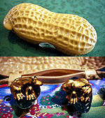
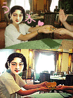

|
ピーナッツ割れたら黄金カエル！ 【雲南発=大清帝國美女ちか様】中国の雲南省を旅してきましたのよ。そしたら、こんなものが売っていましたのでかってきたのよ。
 【全国かえる奉賛会】おおーこれはすごいぞ。大王様あこがれの大清帝國美女ちか様は、福岡で最近、大人気になりつつあるクラコバページに居住する姫君で、中国古典系美女がタイプの大王は、もーメロメロ状態なのである。その、大清帝國美女ちか様が、大王のために、わざわざわざわざ大陸から、不思議な品物をお土産に買ってくれるなんて！こんな、幸せなことがあるだろうかああああああ。あまりに幸せすぎて、余韻をかみしめるために、月曜まで更新しなかったのであーる！
みかけは何の変哲もないピーナッツなのだが、ふたを開くとなかに金色のカエル２匹が、蓮の葉にのったまま、ケーロケロケロ、ケーロケロケロ、ケーロケロケロって鳴いているんだよね。 カエルヨーヨーで職場も円満！【福岡発=だいちゃん様】仕事に行き詰まったときなどに、カエルヨーヨーを手にすると、こいつは、びよおおおん、という間抜けな音とともに伸びちじみするので、とっても心がなごみますよー
【全国かえる奉賛会】大王様の職場も、このところ忙しいので、ときおり、このビヨオオオオオン、というカエルの音を聞いてみんなでなごんでいるぞ。効果音付きのカエル顔面ヨーヨーなんだよね。
カエルサボテン在庫は僅少！【けろテン市場】９月１日未明にカエル新聞を見たやつは幸運なりーっ！！。過去２回の売り出しがすべて即日完売という伝説を作っている、カエルサボテンの第３期発売は９月１日に発売。今回もカエルサボテン２つは即日完売した。
残りは携帯ストラップ１個とポストカード４枚組みが発売しています。けろテン市場にイマスグ行こう。
投稿採用者に武功カエル徽章を授与！ |
かえる古新聞過去に取り上げた記事を見出し付きで一覧したい人は、ここをクリック◆創刊号を見る◆先週号を見る◆話題の号を見る◆かえる新聞の昔を読む
|
私も入っています。。全国かえる奉賛会
大王様に会うには、このバナーをクリック。ずっと奥に写真館があるぞ。全国かえる奉賛会に入会するには、自分のホームページのどこかに、下の部分を追加するとバナーがリンク付きで表示されるぞ。どんどん入会しましょー |


|